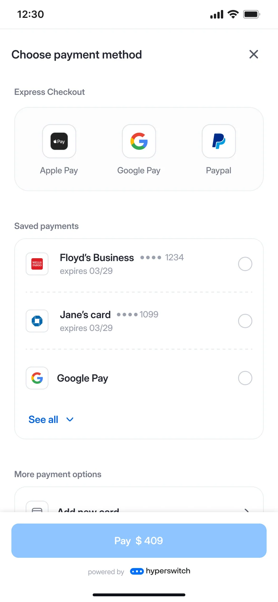
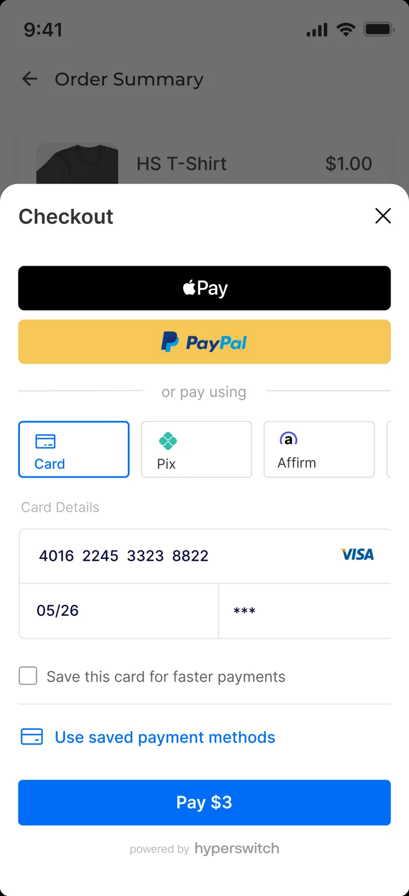
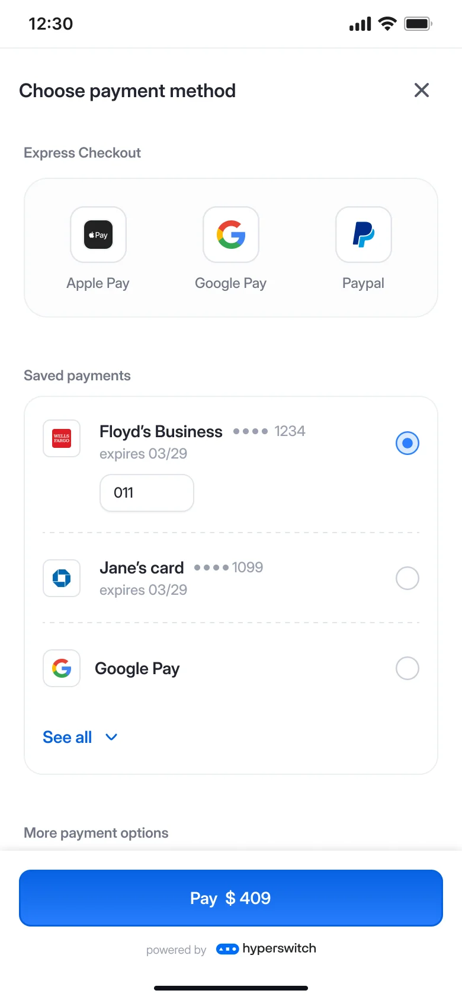
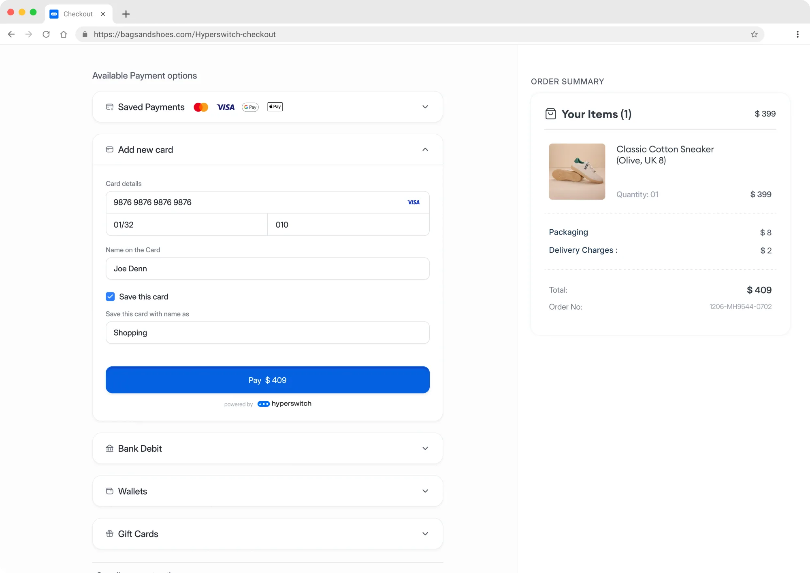
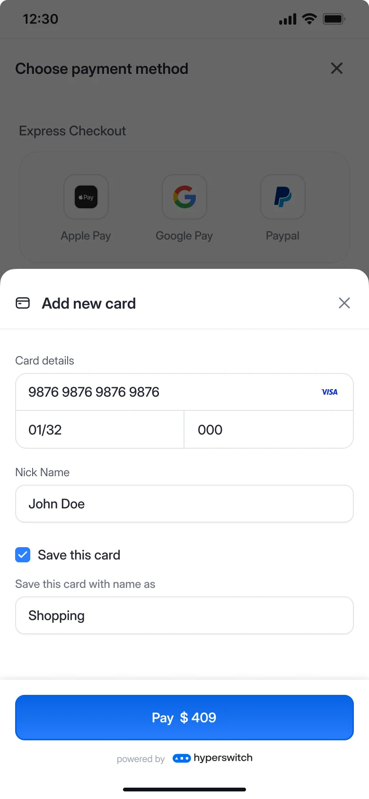
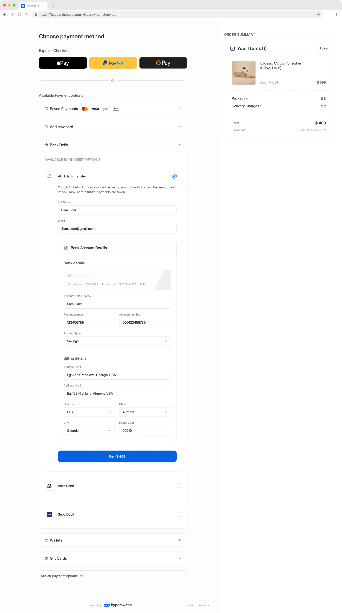
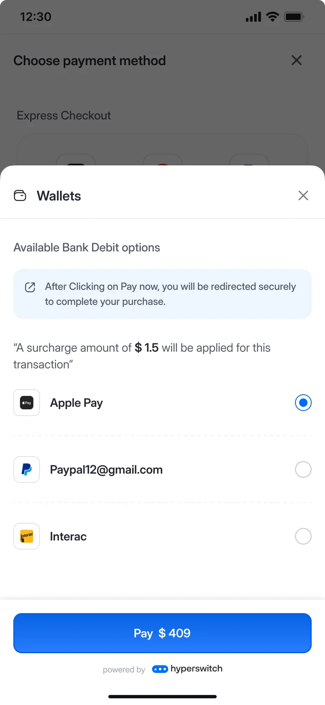
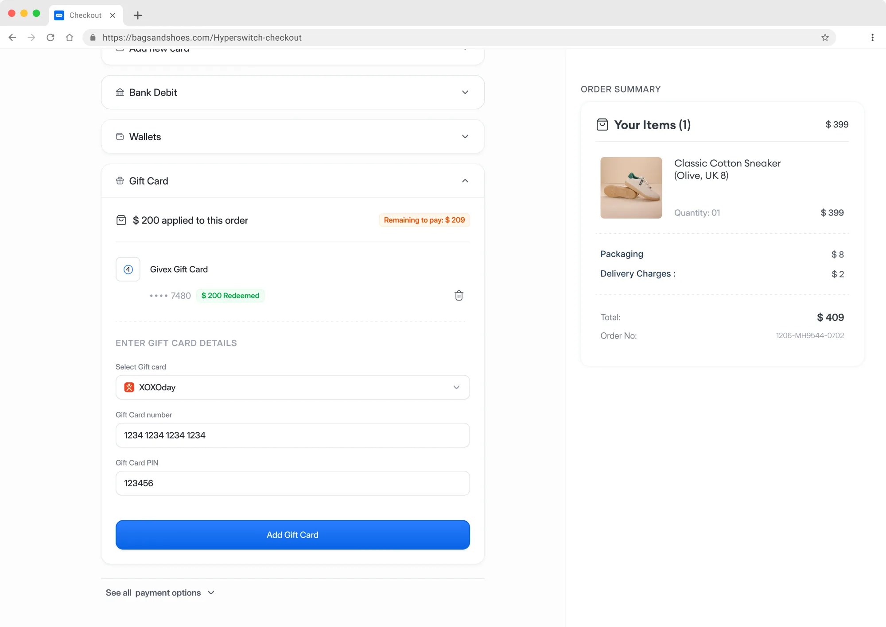
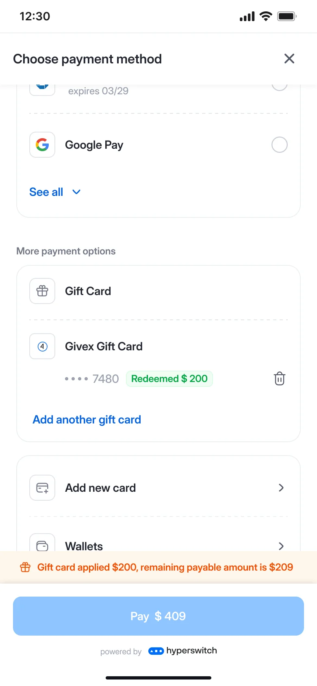
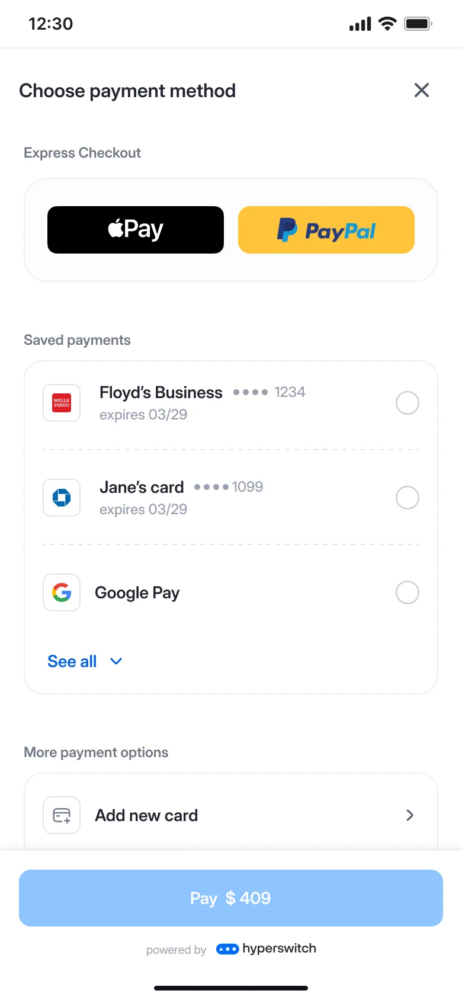

Hyperswitch SDK
- Solo Product Designer
- Juspay Hyperswitch
- End-to-end revamp



Led the end-to-end redesign of the Hyperswitch SDK as the sole designer, rethinking how payment methods are organised, presented and customised across web and mobile. Focused on creating a more consistent, flexible checkout experience for merchants and their customers.
What is the Hyperswitch SDK?
The Hyperswitch SDK is an embeddable checkout experience that merchants integrate into their websites and apps. It brings multiple payment methods, including cards, wallets, Buy Now Pay Later and gift cards, together in one place, allowing customers to choose how they pay.
As checkout expectations evolved, the existing experience began to fall behind in terms of usability, consistency and merchant customisation. The challenge was to rethink how payment methods were grouped and presented, create a cohesive experience across web and mobile, and offer merchants flexibility without making the experience inconsistent or overwhelming.
The previous checkout

New checkout experience
Most merchants enable only a few payment methods, but the checkout needs to accommodate many more. The redesign makes commonly used options easy to find while keeping the experience clear and organised as payment choices grow, across both web and mobile.
Saved payments


Add new card


Bank transfer (ACH)


Wallets


Gift cards


Flexibility, without over-customisation
The goal was to give merchants a few meaningful customisation options without making the checkout complex. From payment button placement to order summary layouts, each option stays within defined design boundaries. This keeps the checkout clean and consistent across merchants, while giving them the flexibility they actually need.
Express checkout on a phone
Two ways to show express checkout at the top: two full-width buttons, or three smaller ones in a row.


A checkout that is consistent, scalable and easier to use, and ready to compete with the market leaders: one experience across web and mobile, a clear path for the most-used methods, and room for the rest.